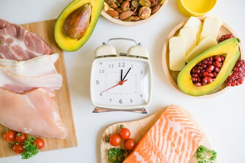
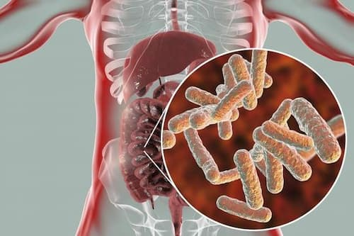

MINDFULNESS Y ALIMENTACIÓN
Mindful Eating o "Comer atentos" es un enfoque que involucra llevar una conciencia plena al proceso de alimentación; a todos los sabores, olores, pensamientos y sensaciones que surgen no solo durante una comida, sino antes y después del acto de comer. Es una práctica milenaria y cualquier persona puede beneficiarse y mejorar su relación con la comida.
CONSEJOS PARA EMPEZAR A PRACTICAR MINDFUL EATING
- DA TU PRIMER BOCADO CONSCIENTE: Hacé un par de respiraciones conscientes antes de empezar, mirá y sentí el aroma de lo que vas a comer. Sentí cómo entra a través de tus labios, su textura, su sabor. Mastica, ensaliva, tritura, como si no fueras a comer después nada más. Dejá que se deshaga en tu boca lentamente mientras respiras consciente.
- ALEJÁ Y APAGÁ LAS DISTRACCIONES PRESENTES DURANTE LA COMIDA: Date cuenta de cuántas veces pensás en encenderlo o acercarlo, qué sensaciones o pensamientos tenéss y decidí seguir comiendo. Lo importante es ser consciente de esta realidad. Evitá castigarte por pensar en ello, sólo date cuenta, observa tus justificaciones o razones y decidí seguir comiendo.
- ESCUCHÁ TU CUERPO: Date tiempo durante la comida; nadie te está apurando ni va a ser tu última comida. Empezá a masticar mas despacio cada bocado. Para sentir las señales y la sensación des aciedad real debemos esperar entre 20 y 30 minutos. Por eso la clave está en servirnos un plato y saborearlo despacio, con atención pero también con placer.
- ENTRE BOCADO Y BOCADO, SOLTÁ LOS CUBIERTOS: La mano dejará de percibir que tiene que moverse y hacer algo. Tomate tu tiempo para
saborear un bocado, prestale atención, masticá lentamente mientras dejás los cubiertos en la mesa. Hacé una pausa. Retomalos una vez que saboreaste, masticaste y tragaste el bocado de comida. Repetí la acción, de manera consciente.
- TOMÁ UN VASO DE AGUA LENTAMENTE: Sorbo a sorbo, antes de empezar a comer. Esta actividad reducirá tu sensación de hambre y ayudarás al proceso de la digestión, ya que el exceso de agua entre bocado y
- COMÉ CON TU MANO NO DOMINANTE: Esta actividad te ayudará a estar más consciente del acto de comer y ralentizará el ritmo. Soltá los cubiertos y volvé a agarrarlos. Es un juego sencillo y a la vez muy poderoso para ser consciente al comer.
- DECIDÍ PREPARAR DESPACIO UNA DE LAS COMIDAS DEL DÍA: Lavá, cortá, prepará, cociná atenta a las texturas, colores, aromas, apariencias de los distintos alimentos, cociná con calma. Prepará una comida sencilla, con cariño y amor hacia vos mismo/a. Da igual si es un café, una ensalada o un plato de fideos. Activá todos tus sentidos. Mirá, olé, sentí y saboreá el mayor tiempo posible, sin apuros ni distracciones.
CRONOINMUNONUTRICIÓN

Nuestro cuerpo está diseñado para comer durante el día y dormir durante la noche. La Hormona LHS (Lipasa hormono sensible) moviliza y oxida acidos grasos del tejido adiposo. Tiene ritmo interno y máxima actividad por la noche. Por esto mismo, te damos algunas recomendaciones:
- Respetar horarios de las comidas.
- Evitar picoteo entre comidas, dándole tiempo al organismo para hacer la digestión y evitar picos constantes de glucemia/glucosa en sangre.
- Cenar temprano: Facilita la pérdida de peso (19.30-20 h) frente a comer tarde (22-23h) disminuyendo la ingesta de carbohidratos.
Lo ideal es cenar como mínimo entre 2-3 horas antes de irnos a dormir.
- Ayunar de día y comer de noche: Se asocia a una disminución de la hormona Leptina (hormona de la saciedad) lo que generará que queramos comer mas durante las comidas, picotear entre las comidas u optar por opciones poco saludables.
Poder ayunar entre comidas o realizar un ayuno de al menos 12 horas entre la última comida y la primera del día siguiente nos brinda múltiples beneficios:
- Mejora resistencia a la insulina.
- Reduce inflamación.
- Mejora inmunidad.
- Disminuye placa de ateroma
- Mejora neuroplasticidad
- Mantenimiento de masa muscular.
- Disminuye presión arterial
- Disminuye glucosa/glucemia basal (en ayunas)
- Aumenta actividad de LHS (mayor combustión de grasas)
- Mejora flexibilidad metabólica (se utilizan mejor los sustratos como los hidratos, proteínas y grasas para obtener energía)
MICROBIOTA Y SALUD INTESTINAL

Se sabe que existe una estrecha relación entre la dieta que seguimos y cuán diversa, equilibrada y sana es nuestra comunidad bacteriana, lo que, a su vez, repercute en nuestra salud digestiva. Una alimentación equilibrada fomenta la formación y la conservación de una microbiota bien estructurada, en la que las diversas especies de microorganismos cohabitan en un sistema de control y equilibrio.
Por sorprendente que pueda parecer, lo cierto es que nos habitan más de 100 billones de microorganismos, que si pudiéramos reunir y colocar en una balanza sumarían alrededor de 2 kg. Habitan, sobre todo, en el colon, donde se alimentan de los restos de los productos que ingerimos (las fibras, por ejemplo). Se podría decir que les ofrecemos techo y comida. A cambio, se encargan de digerir algunos componentes no digeribles de nuestros alimentos que nosotros somos incapaces de digerir, como algunas fibras, porque carecemos de las herramientas para hacerlo. Entre las moléculas producidas, cabe destacar los ácidos grasos de cadena corta que aportan energía a las células del organismo y entrenan al sistema inmune. Estas bacterias producen incluso algunas vitaminas que necesitamos. Son, por tanto, esenciales para nuestra salud.
Podemos incorporar prebióticos a nuestra alimentación habitual de forma rápida y sencilla, con alimentos de consumo común y fáciles de adquirir. Recordá que la clave siempre está en la variedad y en los colores (cuanto mas colorida sea nuestra alimentación, los bichitos que nos habitan mas que felices).